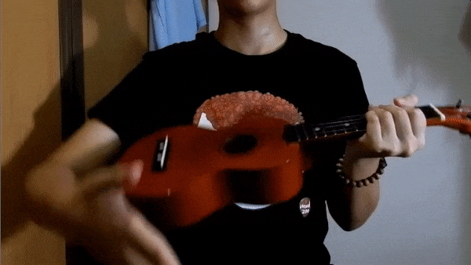
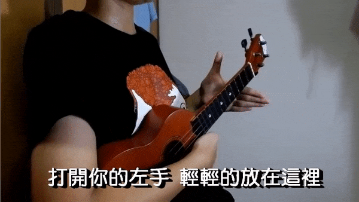
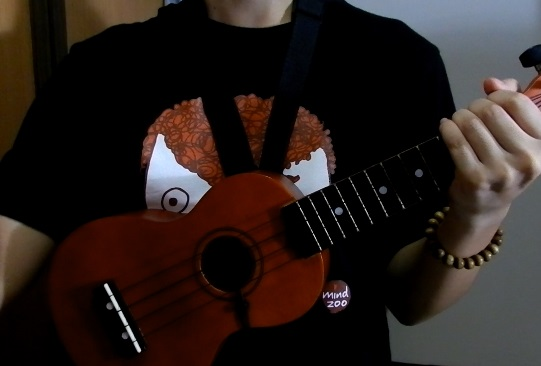
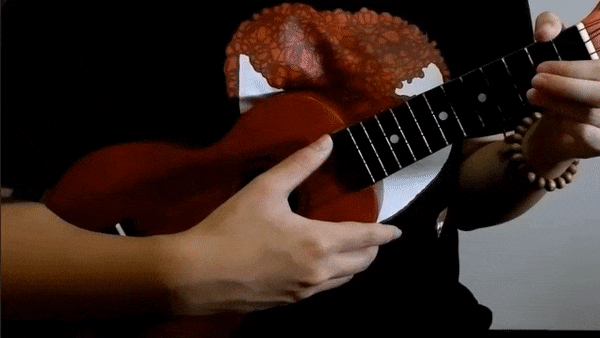
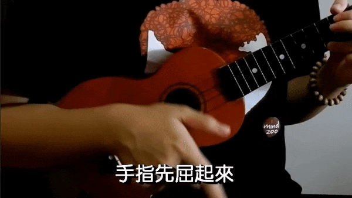
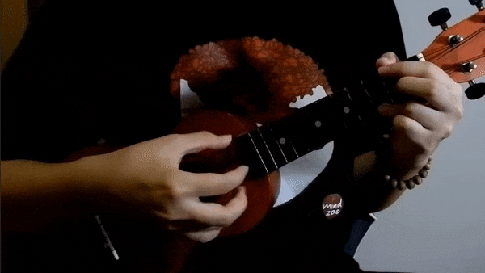
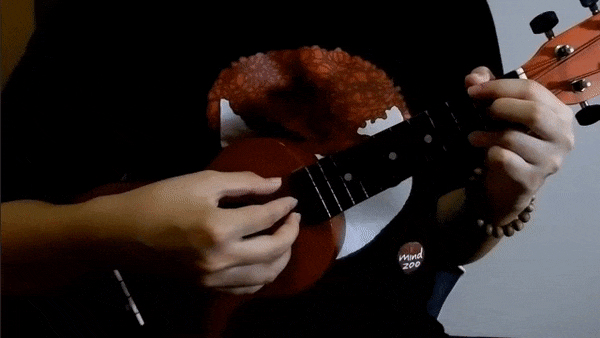
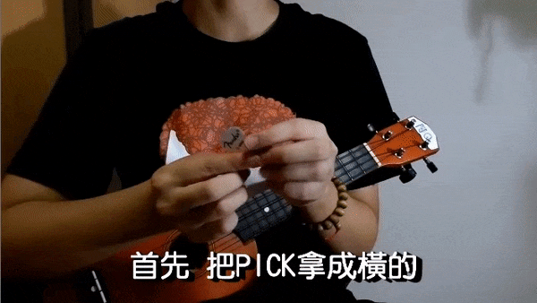

烏克麗麗是一個很隨興的樂器
所以沒有一定的姿勢或方式
最重要的就是讓自己感覺到舒服自在就好囉
持琴姿勢
一般
首先坐挺，不要駝背
- 右手抓起琴身，擺到胸口的位置
- 右手臂和身體順勢夾住琴身，琴頭會比琴身高

- 左手虎口輕輕扣住琴頸上方的位置，不用用力
注意是虎口而不是手掌貼住
可以利用虎口當支點，轉轉看手腕是否很靈活

或者把琴身放在腿上
只要你喜歡就可以囉~
背帶 (掛勾式)
- 把背帶掛到脖子上
- 勾勾扣住響孔
- 用彎曲的右手臂固定住琴身，左手輕輕支撐住琴頭

彈奏方式
左手指甲剪乾淨
右手可留指甲
拇指撥弦法
適合溫暖的歌曲
- 食指、中指、無名指、小指扶著琴身
- 拇指用
側邊的肉撥弦
注意是 往下撥不是往外撥
彈完第四弦之後，拇指落在第三弦
彈完第三弦之後，拇指停在第二弦
彈完第二弦之後，拇指停在第一弦
彈完第一弦，拇指停在琴身

一開始先一根一根慢慢彈
熟悉後可加快速度
而且四根手指頭也不用扶著琴身
利用 手腕 的轉動來帶動即可
食指刷弦法
適合輕快的歌曲
- 轉動
手腕並用食指側邊指甲刷弦 - 刷完後手腕轉回來，食指彎曲回來
如果覺得很僵硬可以甩手，或假裝被燙到，甩到整隻手放鬆 XD

分散和弦法
適合柔美的歌曲
可以讓歌變的有層次
上面的方式都是是用一根手指頭一次刷
但這個是用一根一根手指頭彈
彈奏沒有固定的順序，手指也沒有固定要彈哪一弦
範例一
- 把拇指放在第四弦上面，食指放第三弦、中指放第二弦、無名指放第一弦
- 拇指彈第四弦
- 食指彈第三弦
- 中指彈第二弦
- 無名指彈第一弦
步驟 2~5 不停循環

範例二
著名的 T1213121
- 把拇指放在第四弦上面，食指放第三弦、中指放第二弦、無名指放第一弦
- 拇指彈第四弦
- 食指彈第三弦
- 中指彈第二弦
- 食指彈第三弦
- 無名指彈第一弦
- 食指彈第三弦
- 中指彈第二弦
- 食指彈第三弦
步驟 2~9 不停循環

Pick 法
適合快節奏的 Solo 或單音
Pick 有分軟硬，軟適合刷和弦，硬適合 Solo
拿法
- 先將 Pick 拿橫的
- 拇指直的放上去
- 食指橫的放上去
一樣是用轉動手腕的方式刷奏

如果要刷弦就拿後面一點，讓 Pick 露出比較多地方
如果要 Solo 就拿前面一點，速度可以比較快
可能有人覺得用 Pick 刷弦很吵有嘎嘎的聲音
但聽說現在烏克麗麗有專門的 Pick
材質是羊毛氈
有興趣的朋友可以試試看